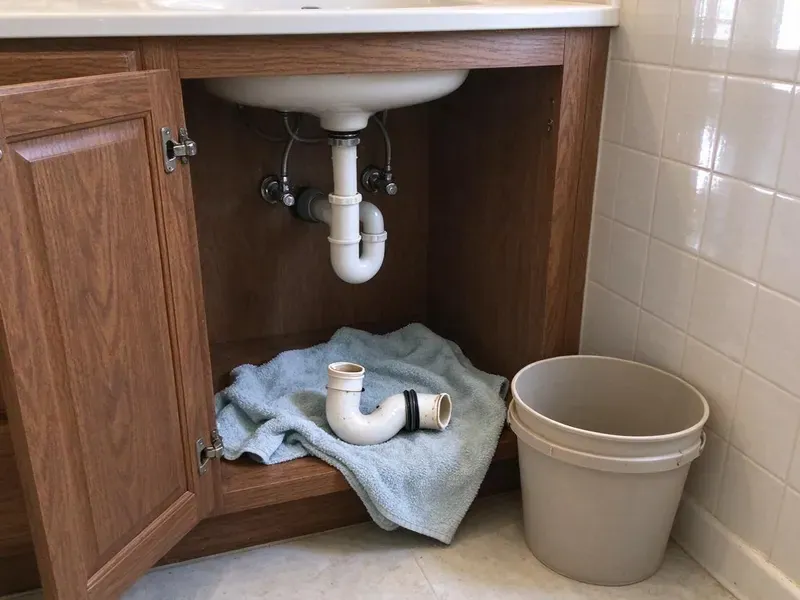

Plumbing Repair in Millsboro, DE
When plumbing problems hit your Millsboro, DE home, you need quick, reliable service. GNV Plumbing is ready to handle any repair, big or small, to restore your system.
- Expert Diagnostics
- Warrantied Repairs
- Honest Pricing
- Fast Local Service

Your Go-To Source for Plumbing Repair in Millsboro, DE.
Call now and a licensed plumber can often be at your door the same day.
Your First Call for Plumbing Repair in Millsboro, DE
GNV Plumbing provides full-service plumbing repair services across Millsboro, DE. Our experienced technicians are equipped with modern tools to diagnose and fix everything from a simple faucet drip to complex sewer line issues, ensuring your home's plumbing system works the way it should.
Our expertise includes:
- Repair and replace water heaters, including tankless models.
- Sewer camera inspection with locating to find breaks and roots
- Gas, electric and tankless water heater diagnostics and part repair

Additional Plumbing Repair Services in Millsboro, DE
We offer expert plumbing repair services across Millsboro, DE to stop leaks, clear blockages, and keep every fixture working the way it should.


Customers
Why Choose GNV Plumbing for Plumbing Repair in Millsboro, DE?
Choosing the right plumber in Millsboro means hiring a team that understands local building codes and Delaware plumbing challenges. GNV Plumbing brings years of experience to every job, making sure your repairs are done right the first time.
- Certified Plumbers, Our team holds all required licenses and certifications, guaranteeing professional and compliant service.
- Certified Technicians, Every plumber is licensed, insured, and regularly trained on current repair techniques and safety standards.
- Local Expertise, Our team knows the plumbing issues common to Delaware homes, from moving soil under foundations to mineral buildup in fixtures.
Citywide Coverage
We repair plumbing in every part of Millsboro, from older neighborhoods with galvanized and cast iron lines to new subdivisions plumbed in PEX. Wherever you are in town, a plumber can usually reach you the same day.
Experienced Team
Our plumbers have repaired thousands of plumbing systems, so a scaled-up pressure regulator or a leaking slab line is routine work. Each technician trains on current codes and the materials used across Delaware.
Safety-First Approach
Safety is paramount in all our plumbing repair work. GNV Plumbing strictly follows all safety protocols and Delaware building codes, especially when dealing with gas lines, water pressure, or sewer systems.
Trusted Certified Millsboro Plumbing Services Professionals
At GNV Plumbing, we take pride in providing certified plumbing services throughout Millsboro, DE. Backed by leading industry credentials, our experienced plumbers combine technical skill with genuine customer care. Whether it is repair, installation, or maintenance, we follow strict safety and quality standards to deliver lasting results you can trust.
Call Us Now PHCC Plumbing Contractor Recognition
PHCC Plumbing Contractor Recognition Better Business Bureau (BBB) Accreditation
Better Business Bureau (BBB) Accreditation Angi Certified Pro
Angi Certified Pro ISO 9001 Quality Management Certification
ISO 9001 Quality Management CertificationProfessional Plumbing Repair Services in Millsboro, DE
Trenchless Pipe Repair in Millsboro, DE
Trenchless methods let us fix damaged sewer and water lines without tearing up driveways, pavers or mature landscaping. Pipe bursting pulls a new HDPE line through the old path, while cured-in-place lining creates a new pipe inside the existing one. These options often cost about the same as a deep excavation once restoration is counted. We confirm the line is a good candidate with a camera before recommending it.

Copper Pipe Leak Repair in Millsboro, DE
Copper pipes are durable, but even they can develop pinhole leaks over time due to water chemistry, pressure fluctuations, or galvanic corrosion. Water in Delaware ranges from moderately soft to hard depending on the source, and groundwater areas often see more mineral buildup on fixtures. Ignoring these small leaks can lead to costly water damage. Our technicians are experts at locating and repairing copper pipe leaks, either by soldering a patch or replacing the damaged section, restoring the integrity of your plumbing system in Delaware.
Sewer Line Repair in Millsboro, DE
Sewer line problems, like persistent clogs, foul odors, or lush spots in your yard, indicate serious issues. Tree root intrusion is a frequent problem in Millsboro, causing cracks and blockages. We offer both traditional trenching and modern trenchless sewer line repair methods. Trenchless methods, such as pipe bursting or pipe lining, allow us to repair or replace your sewer line with minimal excavation, preserving your landscaping and property in Millsboro.
Drain Repairs in Millsboro
Beyond simple clogs, drains can suffer from cracks, corrosion, or misalignments that require professional repair. If you have slow drains, recurring backups, or notice water pooling around fixtures, it's time for an inspection. Our Millsboro plumbers use camera inspections to find the exact cause of drain line damage and perform targeted repairs, from replacing sections of pipe to hydro-jetting stubborn blockages, ensuring smooth drainage.
Water Heater Repair in Millsboro
When your water heater acts up, whether it's a gas or electric model, you notice it immediately. We diagnose issues like no hot water, inconsistent temperatures, strange noises, or leaks from the tank. Water in Delaware ranges from moderately soft to hard depending on the source, and groundwater areas often see more scale on fixtures. Sediment buildup is a common culprit in Millsboro homes, reducing efficiency. We repair elements, thermostats, pilot lights, and pressure relief valves, extending the life of your unit and restoring your hot water supply.
Gas Leak Repair in Millsboro
Gas leaks are very dangerous and require immediate professional attention. If you smell gas, hear a hissing sound near gas appliances or lines, or experience symptoms like dizziness, evacuate and call us immediately. Our certified technicians in Millsboro use specialized detectors to locate the leak in your natural gas or propane lines, then perform safe and code-compliant repairs or replacements. We put your safety above all else.
Slab Leak Repair in Millsboro, DE
Slab leaks are a serious concern for plenty of homes, especially where soil shifts under the foundation. These hidden leaks under your concrete foundation can cause serious damage, leading to foundation cracks, increased water bills, and mold growth. Our team uses modern acoustic and thermal imaging technology to pinpoint the exact location of the leak without unnecessary demolition. We offer various repair methods including direct access, rerouting, or trenchless solutions to minimize disruption to your Millsboro home.

Water Leak Repair in Millsboro
Leaks hide inside walls, under cabinets and in yard lines between the meter and the house. We find them with moisture meters, thermal cameras and pressure tests, then open only as much drywall or soil as needed. Repairs include replacing pinholed copper sections, failed PEX crimp fittings, leaking hose bibs and worn shutoff valves. Catching a hidden leak early saves drywall, cabinets and flooring from mold.
Plumbing Repairs Near Me in Millsboro, DE
When you search for plumbing repair near me in Millsboro, DE, you want a local company you can trust. GNV Plumbing is your neighborhood plumbing expert, offering timely and reliable service right to your doorstep. We pride ourselves on being readily available to address your plumbing needs, minimizing wait times and getting your system back on track quickly.
When you search for plumbing repair near me, you want someone close by who can show up today and fix the problem without upselling. GNV Plumbing keeps plumbers working throughout the area so response times stay short. We price the repair before we start and stand behind it with a written warranty.
GNV Plumbing at a Glance
- Licensed and insured plumbers serving Millsboro, DE
- 24/7 emergency service with same-day scheduling
- Upfront, flat-rate pricing before work begins
- 4.8-star rated by 849+ Delaware customers
Millsboro Map
Millsboro Information
- Population
- 7,637
- Area codes
- Local
- Service area
- Millsboro and communities within 40 miles
- Nearby
- Georgetown, Seaford, Milford, Dover
Water in Delaware ranges from moderately soft to hard depending on the source, and groundwater areas often see more mineral buildup on fixtures. Houses in Millsboro, DE can see scale buildup, pinhole leaks and slab line failures over time, so prompt plumbing repair prevents costly water damage.
Expert Services
Trust our professionals for reliable GNV Plumbing solutions in Millsboro, DE.
Our Specialized Plumbing Services in Millsboro, DE
At GNV Plumbing, we provide a complete range of plumbing services across Millsboro, DE. From leak detection to full system installations, our team ensures fast, precise, and affordable service for both residential and commercial properties. Explore our core services below:


How Our Plumbing Repair Service Works in Millsboro, DE
At GNV Plumbing, we've streamlined our plumbing repair process to be as efficient and stress-free as possible for our Millsboro customers. We aim to get your plumbing issues resolved quickly and correctly.
Request a Quote
Contact us by calling (302) 406-6354 or filling out our online form to schedule your plumbing repair service. We will collect initial information about your issue.
Expert Diagnosis
A certified GNV Plumbing plumber will arrive at your Millsboro home to thoroughly inspect the problem. We use advanced tools to accurately diagnose the root cause.
Clear Solutions
We provide a detailed explanation of the issue and a clear, upfront quote for the necessary repairs. You will understand all your options before we start.
Frequently Asked Questions About Plumbing Repair in Millsboro
The cost of plumbing repair in Millsboro varies widely depending on the type and severity of the issue. Minor repairs like a leaky faucet might range from $150 to $350, while major repairs such as a slab leak or sewer line replacement could be anywhere from $2,000 to $10,000+. We provide upfront, transparent pricing after a thorough diagnosis.
GNV Plumbing repairs and services all major brands of water heaters commonly found in Millsboro homes, including Rheem, A.O. Smith, Bradford White, Noritz, Rinnai, and Bosch. Our technicians are trained to work on both traditional tank-style and tankless water heater models, ensuring expert service regardless of the manufacturer.
Regular plumbing maintenance can greatly reduce the need for repairs. This includes avoiding pouring grease down drains, using drain strainers, flushing your water heater annually to remove sediment, checking for leaks regularly, and scheduling professional plumbing inspections. Freezing weather arrives most winters in Delaware, and pipes in crawlspaces, exterior walls, and unheated garages are the first to freeze. Insulating exposed pipes ahead of cold weather helps prevent freezing.
Look out for warning signs such as dripping faucets, consistently slow drains, gurgling noises from drains or toilets, unexplained wet spots on walls or floors, sudden increases in your water bill, or a drop in water pressure. Any lingering strange odors from drains can also indicate a problem.
Water in Delaware ranges from moderately soft to hard depending on the source, and groundwater areas often see more mineral buildup on fixtures. Hard water builds scale inside valves, fixtures and water heaters, and some water chemistry contributes to pinhole leaks in copper. Older homes in the north often have basements, while many newer and coastal homes sit on slabs or raised foundations.
Watch for a water meter that moves with every fixture off, a sudden jump in your water bill, warm spots on tile floors, musty smells or stained drywall. Low water pressure and the sound of running water at night are also common clues.
While minor clogs can sometimes be handled with a plunger, most plumbing repairs are best left to professionals. Incorrect DIY attempts can often worsen the problem, lead to more extensive damage, or even create safety hazards, especially with gas or pressurized water lines. Professionals have the right tools and expertise.
Yes, GNV Plumbing stands behind the quality of our plumbing repair work. We offer a warranty on both parts and labor for all repairs performed. The exact warranty period may vary depending on the type of repair and components used. We will provide full details on your warranty before we start.
What People Are Saying About Our Plumbing Experts?

Laura S.
I scheduled a water heater replacement, and the team made the process smooth and affordable. The new unit works perfectly, and they cleaned up after completing the job.
Water Heater Replacement · Georgetown, DE
Emily R.
I called GNV Plumbing for plumbing repair, and the technician was fast, polite, and thorough. They explained the problem clearly and fixed it the same day. I will definitely hire them again. Highly recommended!
Plumbing Repair · Seaford, DE
James P.
Our commercial plumbing system had a leak under the sink, and GNV Plumbing handled it professionally. The plumbers arrived quickly and restored everything without disruption to our customers.
Commercial Plumbing · Milford, DERobert G.
The trenchless sewer replacement saved our front yard. They walked us through the camera inspection footage first so we knew exactly what we were paying for.
Sewer Line Replacement · Smyrna, DE
Mark T.
When our office needed drain cleaning, GNV Plumbing provided quick, reliable service. The plumber arrived on time and made sure every drain flowed perfectly before leaving. Very satisfied.
Drain Cleaning · Seaford, DESofia M.
Two new toilets installed in one visit, no mess left behind, and the tech even adjusted a faucet he noticed was dripping. Fair pricing and really friendly.
Toilet Installation · Dover, DE